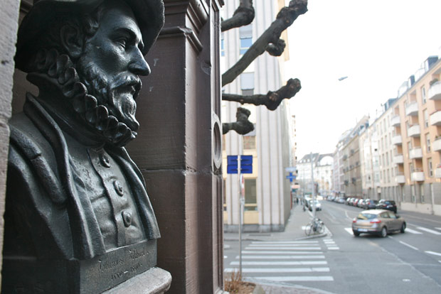

<!DOCTYPE html>
<html>
<head>
<meta name="viewport" content="initial-scale=1.0, user-scalable=no"/>
<meta http-equiv="content-type" content="text/html; charset=UTF-8"/>
<title>Google Maps JavaScript API v3 Example: Directions Waypoints</title>
<style>
  
  html, body {
  height: 100%;
  margin: 0;
  padding: 0;
  font-family: arial;
}


</style>
<script type="text/javascript" src="//maps.googleapis.com/maps/api/js?sensor=false"></script>
<script type="text/javascript">
  
  var directionDisplay;
  var directionsService = new google.maps.DirectionsService();
  var map;

  function initialize() {
    directionsDisplay = new google.maps.DirectionsRenderer();
    var strasbourg = new google.maps.LatLng(48.583333,7.75);
    var myOptions = {
      zoom: 16,
      mapTypeId: google.maps.MapTypeId.ROADMAP,
      center: strasbourg
    }
    map = new google.maps.Map(document.getElementById("map_canvas"), myOptions);
    
    directionsDisplay.setMap(map);
    
    
    
    /* marqueur 1*/
    var image1 = 'img/marker1.png';
    var myLatLng1 = new google.maps.LatLng(48.57485793741989, 7.755621910095215);
    var marker1 = new google.maps.Marker({
        position: myLatLng1,
        map: map,
        icon: image1
    });
    
   var contentString1 =
        '<div id="content">'+
        '<div id="bodyContent">'+
        '<h2><strong>Départ : </strong>Quai du Général Koenig <span>14h11</span></h2>'+
        ''+
        '</div>'+
        '</div>'; 
    
    var infowindow1 = new google.maps.InfoWindow({
        content: contentString1
    });

    google.maps.event.addListener(marker1, 'click', function() {
        infowindow1.open(map,marker1);
      });  
    
    /* marqueur 2*/
    var image2 = 'img/marker2.png';
    var myLatLng2 = new google.maps.LatLng(48.581276006743835, 7.75646506884766);
    var marker2 = new google.maps.Marker({
        position: myLatLng2,
        map: map,
        icon: image2
    });
    
   var contentString2 =
        '<div id="content">'+
        '<div id="bodyContent">'+
        '<h2><strong>Fontaine de la place du Pont-au-Chat</strong> Rue de Zurich</h2>'+
        ''+
        '</div>'+
        '</div>'; 
    
    var infowindow2 = new google.maps.InfoWindow({
        content: contentString2
    });

    google.maps.event.addListener(marker2, 'click', function() {
        infowindow2.open(map,marker2);
      });  
    
    
    /* marqueur 3*/
    var image3 = 'img/marker3.png';
    var myLatLng3 = new google.maps.LatLng(48.57989015475338, 7.750694296152119);
    var marker3 = new google.maps.Marker({
        position: myLatLng3,
        map: map,
        icon: image3
    });
    
   var contentString3 =
        '<div id="content">'+
        '<div id="bodyContent">'+
        '<h2>Premier étage du Musée historique</h2>'+
        ''+
        '</div>'+
        '</div>'; 
    
    var infowindow3 = new google.maps.InfoWindow({
        content: contentString3
    });

    google.maps.event.addListener(marker3, 'click', function() {
        infowindow3.open(map,marker3);
      });
    
  
    /* marqueur 4*/
    var image4 = 'img/marker4.png';
    var myLatLng4 = new google.maps.LatLng(48.580599942849794, 7.7495087597675365);
    var marker4 = new google.maps.Marker({
        position: myLatLng4,
        map: map,
        icon: image4
    });
    
   var contentString4 =
        '<div id="content">'+
        '<div id="bodyContent">'+
        '<h2>Muret du canisite de la place des Tonneliers</h2>'+
        ''+
        '</div>'+
        '</div>'; 
    
    var infowindow4 = new google.maps.InfoWindow({
        content: contentString4
    });

    google.maps.event.addListener(marker4, 'click', function() {
        infowindow4.open(map,marker4);
      });


    /* marqueur 5*/
    var image5 = 'img/marker5.png';
    var myLatLng5 = new google.maps.LatLng(48.583055732762524, 7.747057220727925);
    var marker5 = new google.maps.Marker({
        position: myLatLng5,
        map: map,
        icon: image5,
        zIndex:1000
    });
    
   var contentString5 =
        '<div id="content">'+
        '<div id="bodyContent">'+
        '<h2><strong>Premier étage du McDo - Rue des Grandes-Arcades</h2>'+
        ''+
        '</div>'+
        '</div>'; 
    
    var infowindow5 = new google.maps.InfoWindow({
        content: contentString5
    });

    google.maps.event.addListener(marker5, 'click', function() {
        infowindow5.open(map,marker5);
      });

    calcRoute()
  }
  
  function calcRoute() {
    var start = "Quai du Général Kœnig, Strasbourg";
    var end = "Place Kléber, Strasbourg";
    var waypts = [
                  
                  {location:"Rue de la Brigade alsace-Lorraine, Strasbourg"},
                  {location:"Place d'Austerlitz, Strasbourg"},
                  {location:"Rue des Orphelins, Strasbourg"},
                  {location:"Place de Zurich, Strasbourg"},
                  {location:"3 Rue de Zurich, Strasbourg"},
                  {location:"Quai des bateliers, Strasbourg"},
                  {location:"18 Rue du Vieux marché aux Poissons, Strasbourg"},
                  {location:"65 Rue des Grandes Arcades, Strasbourg"},
                  
                 ];
   

    var request = {
        origin: start, 
        destination: end,
        waypoints: waypts,
        optimizeWaypoints: true,
        travelMode: google.maps.DirectionsTravelMode.WALKING
    };
    
    directionsService.route(request, function(response, status) {
      if (status == google.maps.DirectionsStatus.OK) {
        
        directionsDisplay.setDirections(response);
        
      }
    });
  }
  
  
  
  
</script>
</head>
<body onload="initialize()">
<div id="map_canvas" style="float:left;width:100%;height:100%;"></div>

</body>
</html>
